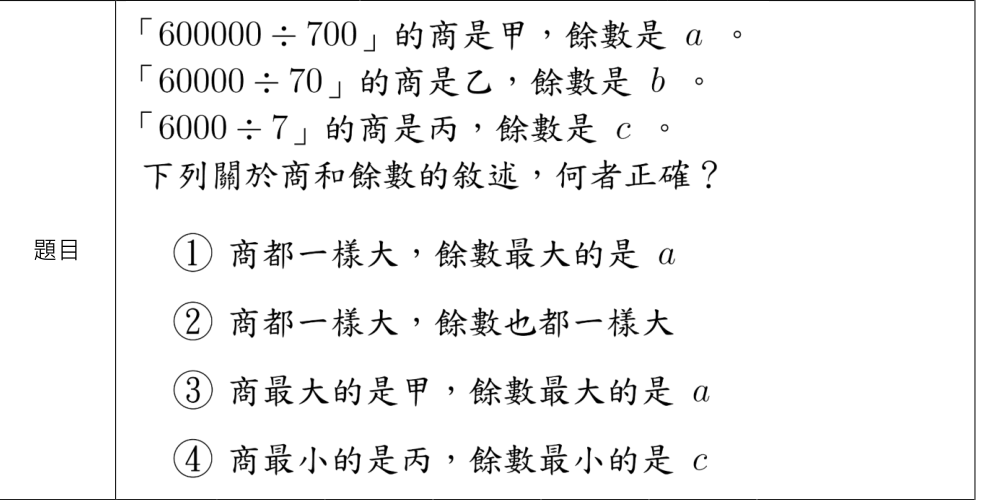

🎯 學力檢測評量核心架構
命題三層次
學力檢測命題聚焦於三個層次：概念理解（C.U.）、程序執行（P.K.）與解題思考（P.S.）。教師在日常備課與課堂教學時，亦可依此三個層次思考目前課本這幾頁是屬於哪一層次的教學重點，引導學生循序建立核心素養。
層次 01 · 記憶與判斷
C.U.
概念理解 (C.U.)
概念性知識：測驗學生是否具備數學基本概念，將腦中記憶之性質與定義提取並進行「判斷」。
📌 典型題型：線對稱對應點
概念提取直接判斷

例如：對稱軸與對應頂點判讀
層次 02 · 運算與常規
P.K.
程序執行 (P.K.)
程序性知識：測驗學生是否知道「如何完成數學運算」，包含熟練符號運算、通分、乘除算則與常規程序。
📌 典型題型：異分母分數加法
通分與標準運算程序

例如：4/7 + 3/5 熟練操作通分算則
層次 03 · 轉譯與高階思維
P.S.
解題思考 (P.S.)
高階解題能力：需「瞭解情境並組織多元知識」，採取適當策略解題。以概念理解與程序執行為基礎，全市失分主戰場！
📌 典型題型：生活情境打折多步驟
多步驟思維轉譯與扣除

例如：原價打8折合計再自2000扣除
🃏 選擇魔王題展示：
114 年 · 四年級
第 25 題：大數除法同消 0 的餘數迷思
P.S. 解題思考
全市通過率：26.0%
📖 官方學力檢測試題原圖真跡：
點擊圖片可在燈箱超清放大

🎯 核心指標：
N-4-2 大數四則運算：同乘同除不影響商，但深刻影響餘數之單位量。
👉 現場互動競猜：
「請現場老師猜猜看：全臺南市這幾千名學生中，哪一個選項是最高選答率的誘答陷阱？」
✅ 深度診斷解碼
誘答選項反應比率與防雷教學指引
⚠️ 致命誘答選項
📊 全臺南市各選項選答率分佈：
含高低分組對比
🔍 專家深度補救解碼：
💡 課堂防雷提問指引（輔導員金句）：